配筋设计与计算验证
31段名义几何、310条同态控制记录、62组包络。历史设计支路与REV25数值模型分别保存。
R48 · 锚固区及HRB500本构
31段实体锚固区环筋最大间距98.35 mm；R44等效积分站最大504.39 mm，不可作为实体锚固构造。全塔锚固区显式候选估算142344单元，较68712增加107.2%，暂不采用。第26–28节斜压结果按完整壁厚、核心厚度及精细压场分别保留，非完整承载力验收。
HRB500标准值500/630 MPa；名义硬化起点1%和2%仅用于敏感性，未并入R44。研发记录 · 31节数据 · 混合候选坐标与面积 · 材料候选片段 · 原条文依据及参数
复算结果
复算一致只验证算术；不等同于专项规范承载力验收。
已保存独立复算收据规范依据及原表
NB/T 10907—2021 官方登记：混合圆形管状塔筒混凝土段及钢混连接设计；第5章组合、第6.3.1/6.3.2抗剪剪扭、附录A预应力损失。完整专项公式与当前参数的正式复算仍待原页和同源输入核实。
GB 50135—2019 §6.5：补充构造依据。下列为公开规范网页原图直接嵌入，未另存原件；若来源阻止加载，可点击原图地址。


内外层环筋最小配筋率各0.20%，受拉侧还需核查45ft/fy（%）；环筋最小直径8 mm、最大间距200 mm且不超过壁厚。6.5.7、6.5.8涉及拉筋交错连接、接头与锚固，当前未证明实际连接构造全部符合。专项规范优先。
代表性截面计算：CSEG31
Φ16，s = 120 mm，名义壁厚 t = 500 mm，ft = 2.09 MPa，fy = 360 MPa。
独立膜剪流诊断：R = (Do+Di)/4 = 2.376499915 m；历史S06，622.55 s，V = 1762.143910 kN，T = 36096.338249 kN·m。
45°斜压场、双层环筋共同工作假设；未计混凝土贡献及纵筋、斜压破坏和锚固验算。η不是NB/T 10907承载力利用率。
500 mm为塔节顶部壁厚，457 mm为中截面壁厚，按何表3-2相邻端部厚度插值已核实；原筛查两种口径应分别说明。
31段计算及几何口径核对
壁厚差 = 内外径反算壁厚 − 名义壁厚，绝对差大于0.1 mm列为待核；R32已证实为顶部与中截面取值位置差异。
| 塔节 | 名义壁厚/mm | 反算壁厚/mm | 差值/mm | 配筋率/% | 同态η | 包络上界 |
|---|---|---|---|---|---|---|
| CSEG_01 | 280.0 | 280.0 | -0.0 | 0.5984 | 0.4401 | 0.4983 |
| CSEG_02 | 280.0 | 280.0 | 0.0 | 0.5984 | 0.4559 | 0.5156 |
| CSEG_03 | 280.0 | 280.0 | 0.0 | 0.5984 | 0.4728 | 0.5341 |
| CSEG_04 | 282.5 | 281.2 | -1.3 | 0.5931 | 0.4903 | 0.5533 |
| CSEG_05 | 287.5 | 285.0 | -2.5 | 0.5828 | 0.5091 | 0.5741 |
| CSEG_06 | 295.0 | 291.3 | -3.7 | 0.5680 | 0.5312 | 0.5984 |
| CSEG_07 | 302.5 | 298.8 | -3.7 | 0.5539 | 0.5537 | 0.6231 |
| CSEG_08 | 307.5 | 305.0 | -2.5 | 0.5449 | 0.5759 | 0.6476 |
| CSEG_09 | 312.5 | 310.0 | -2.5 | 0.5362 | 0.6009 | 0.6750 |
| CSEG_10 | 320.0 | 316.2 | -3.8 | 0.5236 | 0.6276 | 0.7043 |
| CSEG_11 | 327.5 | 323.7 | -3.8 | 0.5116 | 0.6564 | 0.7359 |
| CSEG_12 | 332.5 | 330.0 | -2.5 | 0.5039 | 0.6870 | 0.7694 |
| CSEG_13 | 337.5 | 335.0 | -2.5 | 0.4964 | 0.7195 | 0.8050 |
| CSEG_14 | 345.0 | 341.3 | -3.7 | 0.4857 | 0.7548 | 0.8435 |
| CSEG_15 | 352.5 | 348.7 | -3.8 | 0.4753 | 0.7930 | 0.8854 |
| CSEG_16 | 357.5 | 355.0 | -2.5 | 0.4687 | 0.8342 | 0.9303 |
| CSEG_17 | 360.0 | 358.7 | -1.3 | 0.4654 | 0.8667 | 0.9660 |
| CSEG_18 | 360.0 | 360.0 | -0.0 | 0.4654 | 0.8767 | 0.9779 |
| CSEG_19 | 360.0 | 360.0 | -0.0 | 0.4654 | 0.8747 | 0.9770 |
| CSEG_20 | 340.0 | 350.0 | 10.0 | 0.4928 | 0.8697 | 0.9729 |
| CSEG_21 | 320.0 | 330.0 | 10.0 | 0.5236 | 0.8618 | 0.9657 |
| CSEG_22 | 320.0 | 320.0 | -0.0 | 0.5236 | 0.8566 | 0.9616 |
| CSEG_23 | 320.0 | 320.0 | -0.0 | 0.5236 | 0.8541 | 0.9605 |
| CSEG_24 | 320.0 | 320.0 | -0.0 | 0.5236 | 0.8515 | 0.9592 |
| CSEG_25 | 290.0 | 305.0 | 15.0 | 0.5778 | 0.8445 | 0.9539 |
| CSEG_26 | 260.0 | 275.0 | 15.0 | 0.6444 | 0.8337 | 0.9453 |
| CSEG_27 | 260.0 | 260.0 | -0.0 | 0.6444 | 0.8272 | 0.9413 |
| CSEG_28 | 260.0 | 260.0 | -0.0 | 0.6444 | 0.8247 | 0.9417 |
| CSEG_29 | 354.0 | 307.0 | -47.0 | 0.4733 | 0.8346 | 0.9558 |
| CSEG_30 | 414.0 | 384.0 | -30.0 | 0.4047 | 0.8898 | 1.0193 |
| CSEG_31 | 500.0 | 457.0 | -43.0 | 0.3351 | 1.0388 | 1.1844 |
R32 · 专项规范公式与条件计算
NB/T 10907—2021印刷第26～27页，式(6.3.1-1)～(6.3.2-4)。原页已核读；公式、变量定义及完整逐段输入见计算书。
式(6.3.2-4)分子按受扭纵筋面积解释。条件计算采用环形核心面积、四肢抗剪及单肢受扭假设，Np0=0；未完成空心截面规范映射、完整工况及作用组合核查。
31段中截面壁厚与何顶部插值最大差0.000193 mm，原21处差异为截面位置不同。CSEG28条件扭矩36095.45 kN·m、抗力12870.83 kN·m、指标2.80444；31段均有指标大于1，不得作为正式设计通过，亦不得直接判定真实构件破坏。
| 塔节 | 何顶部厚度/mm | 中截面反算/mm | 条件剪扭指标 |
|---|---|---|---|
| CSEG_01 | 280.0 | 280.000 | 1.6213 |
| CSEG_02 | 280.0 | 280.000 | 1.6530 |
| CSEG_03 | 280.0 | 280.000 | 1.7095 |
| CSEG_04 | 282.5 | 281.250 | 1.7338 |
| CSEG_05 | 287.5 | 285.000 | 1.7848 |
| CSEG_06 | 295.0 | 291.250 | 1.7825 |
| CSEG_07 | 302.5 | 298.750 | 1.7698 |
| CSEG_08 | 307.5 | 305.000 | 1.7640 |
| CSEG_09 | 312.5 | 310.000 | 1.7713 |
| CSEG_10 | 320.0 | 316.250 | 1.7723 |
| CSEG_11 | 327.5 | 323.750 | 1.7681 |
| CSEG_12 | 332.5 | 330.000 | 1.7991 |
| CSEG_13 | 337.5 | 335.000 | 1.8137 |
| CSEG_14 | 345.0 | 341.250 | 1.8229 |
| CSEG_15 | 352.5 | 348.750 | 1.8271 |
| CSEG_16 | 357.5 | 355.000 | 1.8717 |
| CSEG_17 | 360.0 | 358.750 | 1.8850 |
| CSEG_18 | 360.0 | 360.000 | 1.8781 |
| CSEG_19 | 360.0 | 360.000 | 1.8605 |
| CSEG_20 | 340.0 | 350.000 | 1.8995 |
| CSEG_21 | 320.0 | 330.000 | 2.0507 |
| CSEG_22 | 320.0 | 320.000 | 2.0987 |
| CSEG_23 | 320.0 | 320.000 | 2.0766 |
| CSEG_24 | 320.0 | 320.000 | 2.0545 |
| CSEG_25 | 290.0 | 305.000 | 2.3330 |
| CSEG_26 | 260.0 | 275.000 | 2.5788 |
| CSEG_27 | 260.0 | 260.000 | 2.7103 |
| CSEG_28 | 260.0 | 260.000 | 2.8044 |
| CSEG_29 | 354.0 | 307.000 | 2.3558 |
| CSEG_30 | 414.0 | 384.000 | 1.9461 |
| CSEG_31 | 500.0 | 457.000 | 1.8253 |
R33 · 圆环抗扭核心定义敏感性
ACI 445.1R-12 原刊报告第10页 §9.2.2的闭合剪流路径包围面积包含空腔；ACI 318-19培训资料第108页示出空心圆截面。仅作为力学依据，不将其直接移作NB/T 10907规定。GB/T 50010 §6.4.4/13的配筋强度比限制和弯扭钢筋分配亦仅作对照。
| 计算假设 | 最大受扭比 | 控制节 | 超过1的节数 |
|---|---|---|---|
| 环形净面积 | 2.80444 | CSEG_28 | 31 |
| 外围包围面积·全部纵筋 | 0.70412 | CSEG_31 | 0 |
| 外围包围面积·半数纵筋 | 0.90843 | CSEG_31 | 0 |
| 外围包围面积·半数纵筋·ζ上限1.7类比 | 1.14935 | CSEG_31 | 16 |
310条同态记录，四种映射；不改何几何和钢筋根数，不选择最有利结果作为规范验收。
R34 · 环筋间距反算候选
EN 1992-1-1:2023 第8.3.5(2)条、附录G.3膜平衡思路（原文文本），闭合圆环固定45°压杆；不替代NB/T 10907专项验算。
同一组合独立峰值求保守上界，不拼接为实际同态载荷。第1～29节Φ16@120，第30节Φ16@110，第31节Φ16@100；最大环筋剪流需求比0.986990。仅为S06横向膜平衡设计候选，联合纵筋、压杆、全部风震、接缝、锚固及变径环向正力尚未验收，不修改INP。
| 塔节 | 剪流上界 N/mm | 允许间距 mm | 候选间距 mm | 需求比 |
|---|---|---|---|---|
| CSEG_01 | 601.110 | 240.829 | 120 | 0.4983 |
| CSEG_02 | 621.978 | 232.749 | 120 | 0.5156 |
| CSEG_03 | 644.291 | 224.688 | 120 | 0.5341 |
| CSEG_04 | 667.516 | 216.870 | 120 | 0.5533 |
| CSEG_05 | 692.533 | 209.036 | 120 | 0.5741 |
| CSEG_06 | 721.843 | 200.548 | 120 | 0.5984 |
| CSEG_07 | 751.639 | 192.599 | 120 | 0.6231 |
| CSEG_08 | 781.213 | 185.308 | 120 | 0.6476 |
| CSEG_09 | 814.264 | 177.786 | 120 | 0.6750 |
| CSEG_10 | 849.701 | 170.371 | 120 | 0.7043 |
| CSEG_11 | 887.750 | 163.069 | 120 | 0.7359 |
| CSEG_12 | 928.165 | 155.969 | 120 | 0.7694 |
| CSEG_13 | 971.129 | 149.068 | 120 | 0.8050 |
| CSEG_14 | 1017.614 | 142.259 | 120 | 0.8435 |
| CSEG_15 | 1068.078 | 135.538 | 120 | 0.8854 |
| CSEG_16 | 1122.234 | 128.997 | 120 | 0.9303 |
| CSEG_17 | 1165.297 | 124.230 | 120 | 0.9660 |
| CSEG_18 | 1179.652 | 122.718 | 120 | 0.9779 |
| CSEG_19 | 1178.592 | 122.828 | 120 | 0.9770 |
| CSEG_20 | 1173.640 | 123.347 | 120 | 0.9729 |
| CSEG_21 | 1165.010 | 124.260 | 120 | 0.9657 |
| CSEG_22 | 1160.045 | 124.792 | 120 | 0.9616 |
| CSEG_23 | 1158.700 | 124.937 | 120 | 0.9605 |
| CSEG_24 | 1157.199 | 125.099 | 120 | 0.9592 |
| CSEG_25 | 1150.814 | 125.793 | 120 | 0.9539 |
| CSEG_26 | 1140.404 | 126.941 | 120 | 0.9453 |
| CSEG_27 | 1135.559 | 127.483 | 120 | 0.9413 |
| CSEG_28 | 1136.036 | 127.430 | 120 | 0.9417 |
| CSEG_29 | 1153.008 | 125.554 | 120 | 0.9558 |
| CSEG_30 | 1229.637 | 117.730 | 110 | 0.9343 |
| CSEG_31 | 1428.811 | 101.318 | 100 | 0.9870 |
完整计算档案
在线阅读Φ16计算书原文
读取中…
在线阅读纵筋计算书原文
读取中…
在线阅读预应力计算书原文
读取中…
在线阅读历史剪扭计算书原文
读取中…
未闭合的验算
| 项目 | 状态 |
|---|---|
| 完整同步时程、正式组合与实际截面一致性 | 待核 |
| NB/T 10907第6.3条、空心圆环换算 | 待独立复算 |
| 最新纵筋、PT、环筋同源承载力及地震组合 | 待验算 |
| 接头、锚固、保护层、局部裂缝及原生求解 | 待验证 |
R35 · 同态圆周膜力与有效预应力复核
按T075有符号六分量内力逐条计算310条历史控制记录，采用薄壁中面圆周膜力解析极值，不拼接不同圆周位置峰值。EN 1992-1-1:2023 G.3为独立膜平衡参考，非NB/T10907正式验收。
| 支路 | 最大纵向指标 | 控制段 | 超过1节数 |
|---|---|---|---|
| R34筛查 | 1.955634 | CSEG28 | 31 |
| R35无PT、45° | 1.873463 | CSEG28 | 31 |
| BF1、45° | 1.793468 | CSEG28 | 31 |
| BF1、变角 | 1.788318 | CSEG28 | 31 |
| BF8同纵筋敏感性 | 1.342376 | CSEG25 | 25 |
BF1有效力5.384 MN；BF8有效力39.754 MN，均为T078假设设计支路。保留R34环筋候选，不修改INP。纵向膜力诊断不是开裂后截面极限承载力；正式压杆折减、锚固、变径及完整风震组合未验收。
R36 · 开裂圆环截面平衡与纵筋余量
按GB/T 50010第6.2节、附录E.0.1平截面与材料非线性本构，采用T073钢筋中面半径、T077 BF1配筋、T078固定同心有效预压力。620个条件状态包含310条历史控制记录及γP=1.0/1.2。
CSEG28控制：652.80 s，σt=435 MPa，附加剪扭等效拉应力73.15 MPa，I=1.168162。正截面极限应变未超限不等于弯剪扭联合承载力通过；未求解剪扭应力重分布，未核实当前PT状态和全部风震。保留原INP。
R37 · 双向截面重平衡与局部直径反算
先预留剪扭纵筋抗拉能力，再平衡N、Mx、My。原设计613/620条件状态满足，29/31塔节全部满足；仅25、28节待调整。按T077候选直径系列调整25节Φ40→Φ50、28节Φ36→Φ40，620/620状态复算满足本轮条件，最大压应变比0.801928、拉应变比0.573126。非完整规范验收。
实际REV25全部纵筋HRB400 Φ25，与HRB500设计支路不同；最终生产INP未放行。
R38 · 保护层与端部锚固
GB/T 50010（2024年版）8.2.1及8.3.1–8.3.5：第1–25节Φ50纵筋原中截面保护层约37.5 mm，小于50 mm；向壁厚中部移动最大17.50 mm，保留5 mm自定余量。620个条件状态复算全部满足R37条件，最大压应变比0.801893，拉应变比0.572763。
Φ50/40/36受拉锚固长度候选1642/1314/1182 mm；锚固区横向构造钢筋间距≤100 mm，原1–30节候选间距不满足该条件。动力预制端部锚固、实际钢筋笼及完整荷载仍需核查，生产INP未放行。
R39 · 31段钢筋笼重构
REV25原始INP直接读取，14节原修正方案存在径向干涉风险。依据GB 50135—2019 §6.5.7–8重新布置。三维面与局部弦段2039680配对，最小净距0.999 mm，纵筋侧面保护层余量11.258 mm，环筋侧面保护层最小39.233 mm；锚固区间距≤98.348 mm；Φ6交错拉筋11032个候选位置（非单元数），环/轴最大间距491.058/491.740 mm。新中截面620/620条件状态满足。EN斜压敏感性完整壁厚0.7060、核心厚度1.1314，26–28节待核。端部锚固和全工况未验，最终INP未放行。
R40–R42B · 等效环筋与截面复算
实体环筋2320道对应678道候选等效环，32544条单元边；体积与轴向一阶矩守恒，尚需嵌入与响应验证。
EN 1992-1-1:2023 G.9–G.11 条件斜压敏感性：ν=0.629525，31节核心厚度最大需求比0.718874；仅S06诊断。
R42初算旧直径表已作废，以R42B为准。正式INP未放行，全风震、实际PT和端部锚固仍未验收。
R43 · 预应力实际输入与截面敏感性
原REV25：36根×140 mm²，初应力1280 MPa，名义合力6.4512 MN，E=195 GPa，长度112.1 m，半径1.75 m。
| 预应力/MN | 收敛 | 满足条件 | 最大压应变比 | 最大拉应变比 |
|---|---|---|---|---|
| 0.000000 | 620/620 | 614/620 | 1.707220 | 1.634782 |
| 5.383869 | 620/620 | 620/620 | 0.805346 | 0.572648 |
| 6.451200 | 620/620 | 620/620 | 0.771778 | 0.524903 |
无PT条件第26、29节有超限；实际平衡有效力尚未取得。S06仅历史310控制记录，未覆盖完整风震组合。局部锚固试件非原型施工构造。正式INP未放行。
R43 · 交付收口核查
V7七组冻结研究输入：文件清单、字节数、时间轴与倍率元数据7/7匹配，共217264个双分量时间点。第二套缺波不阻断V7研究准备，正式工程准入仍为0。ZIP内容SHA256未重新计算。
R40候选环筋离散边数32544，比REV25的37848减少5304（14.014%）；非实测耗时。未修改正式INP，仍需新模型生成及真实原生验证。
R43 · CDP 材料一致性复核
C65、C70 原归档拉压曲线100点全部通过非负塑性应变及递增检查。REV22→REV24→REV25生成凭据支持材料继承；本轮目标INP连接器返回空正文，直接读回仍待完成。
R43 图表与 R44 研究预检模型 · 2026-11-25
已归档完整候选 INP（8,256,811 bytes）、生成器及逐段静态收据；100 零件、100 实例、30 接触对、68,712 单元记录，更新62个钢筋零件。原生 Abaqus 状态 NOT_RUN，不含风或地震计算步，不作为工程最终模型。
正文新增四图（候选计算，不是ODB结果）

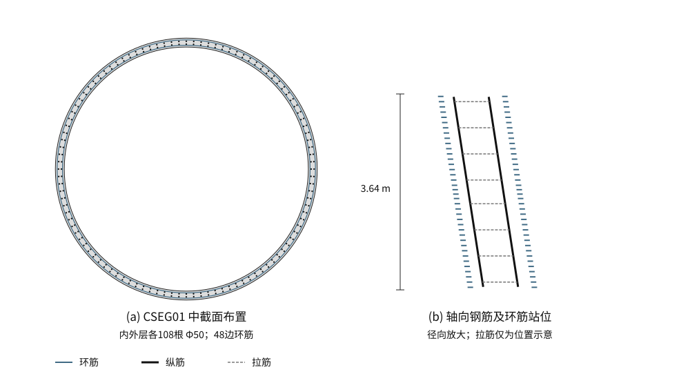

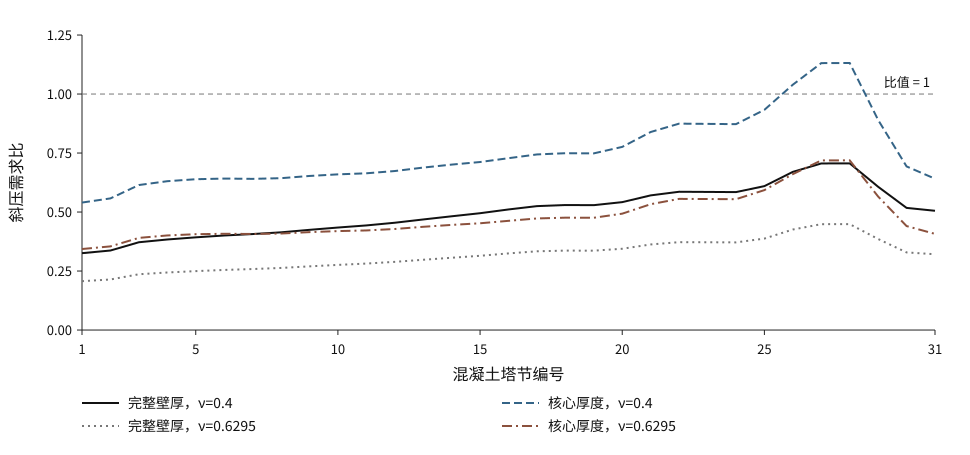

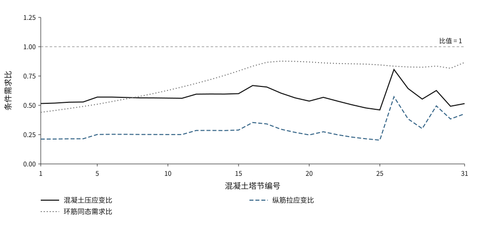

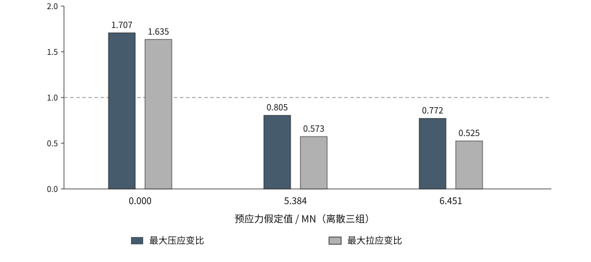
真实原文与本研究并排图
Wu等（2022）DOI: 10.12989/scs.2022.44.3.407；何泽瑜（2024）归档原论文。原PDF裁切及PNG已由工作流渲染并保存；未进行浏览器显示验收。后三张仅方法参照。
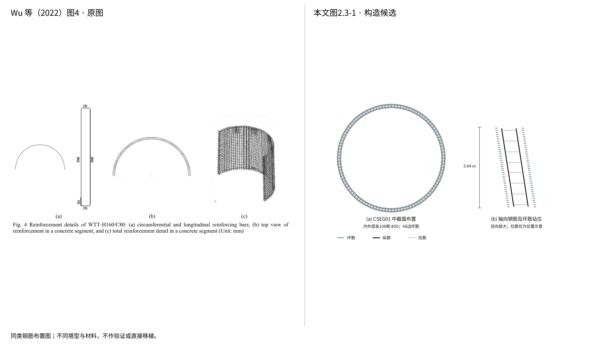
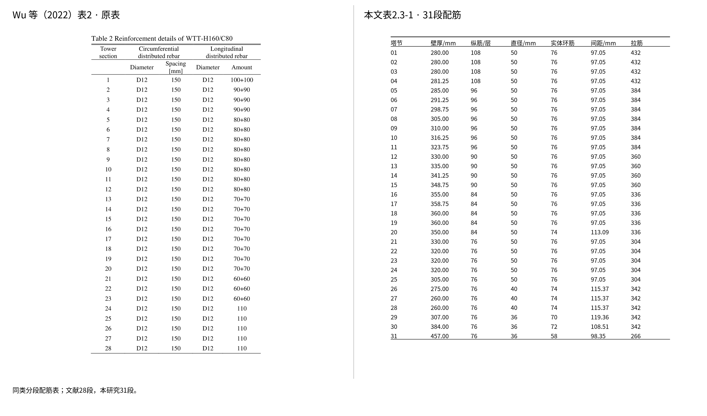
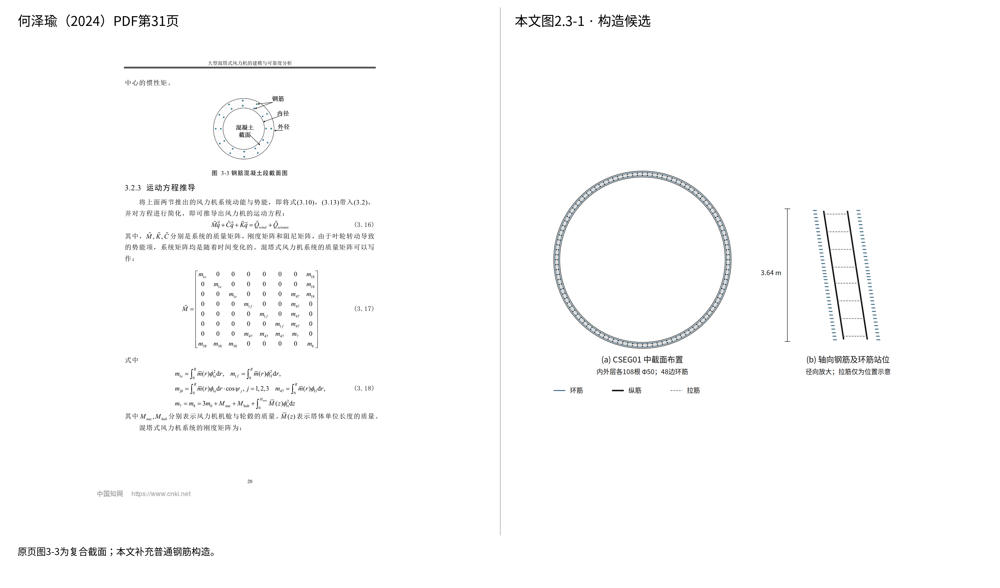
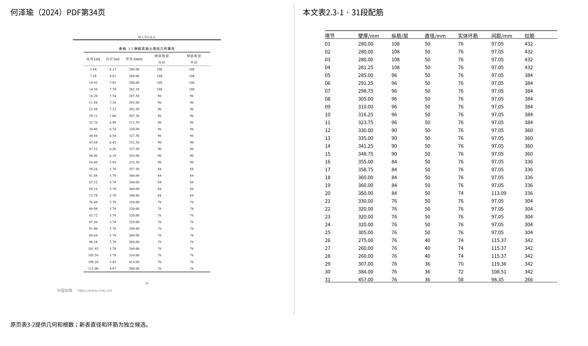
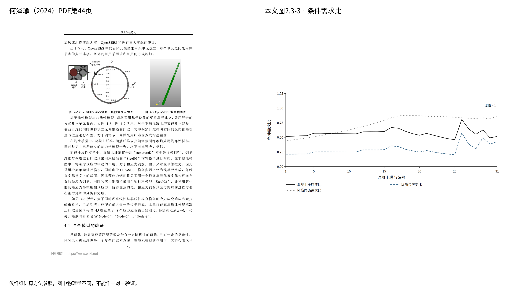
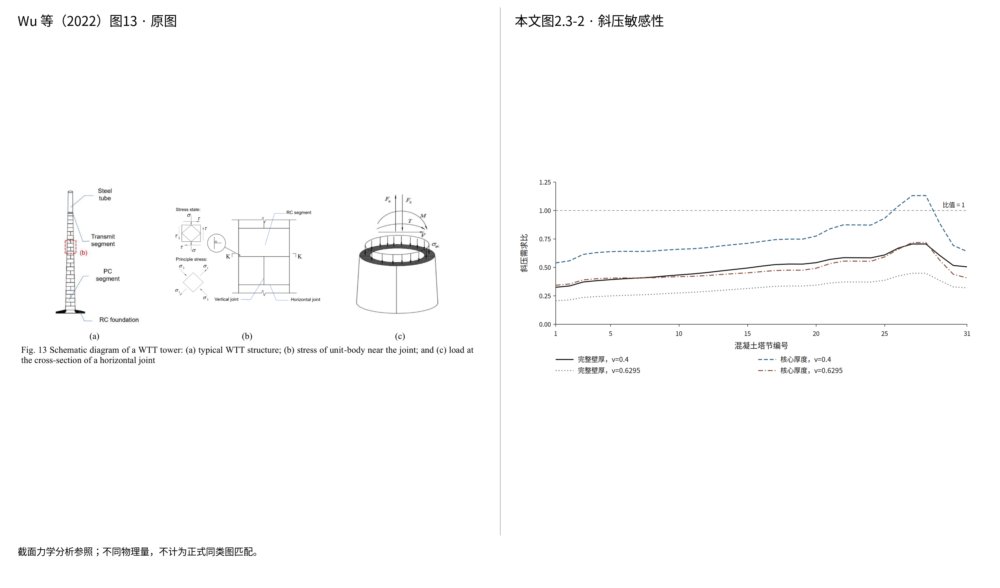
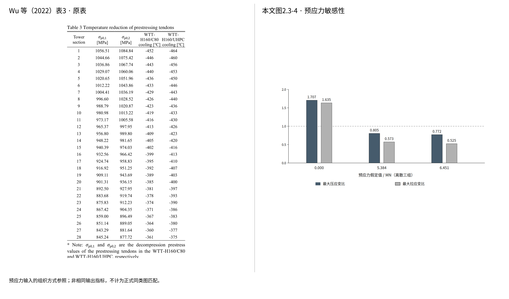